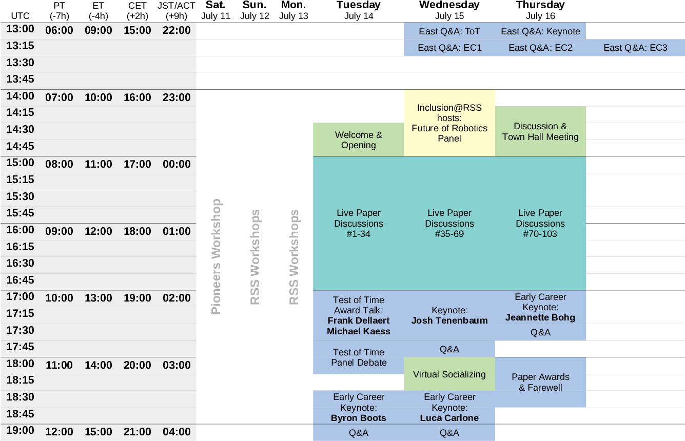

Detailed Program
Overview

Tuesday
Wednesday
Thursday
All times below are given in Coordinated Universal Time (UTC).
Additional live Q&A sessions in Eastern time zones on the following day
All plenary sessions will be recorded and made freely available on
youtube. For those that cannot join the talks live, they can watch them the
next day and join a live Q&A session with the speakers on the
following day. This concerns the Test of Time talk (ToT), the three
Early Career Award talks (EC1-3), and the Keynote talk.
Tuesday, July 14
| 14:30 - 15:00 UTC |
Welcome & Paper Nominations [session]
Marc Toussaint, Jens Kober, Tim Barfoot, Hadas Kress-Gazit
|
| 15:00 - 17:00 UTC |
Live Paper Discussions #1-34 (SEARCH PAPERS BY AUTHOR/TITLE)
|
| 17:00 - 17:45 UTC |
Test of Time Award Talk + Q&A [session]
Speakers: Frank Dellaert, Michael Kaess
Moderator: Marc Toussaint
Title: From Square Root SAM to GTSAM: Factor Graphs in Robotics
|
| 17:45 - 18:15 UTC |
Test of Time Panel Debate [session]
Panelists: Frank Dellaert, Michael Kaess, Danica Kragic, Gaurav Sukhatme
Moderator: Marc Toussaint
|
| 18:30 - 19:15 UTC |
Early Career Award Keynote + Q&A [session]
Speaker: Byron Boots
Moderator: Marco Pavone
Title: Perspectives on Machine Learning for Robotics
|
Wednesday, July 15
Thursday, July 16
| 14:15 - 15:00 UTC |
Discussion & Town Hall Meeting [session]
Hadas Kress-Gazit, Antonio Bicchi, Marc Toussaint
|
| 15:00 - 17:00 UTC |
Live Paper Discussions #70-103 (SEARCH PAPERS BY AUTHOR/TITLE)
|
| 17:00 - 17:45 UTC |
Early Career Award Keynote + Q&A [session]
Speaker: Jeannette Bohg
Moderator: Stefanie Tellex
Title: A Tale of Success and Failure in Robotics Grasping and Manipulation
|
| 18:00 - 18:45 UTC |
Paper Awards & Farewell [session]
Tim Barfoot, Marc Toussaint
|